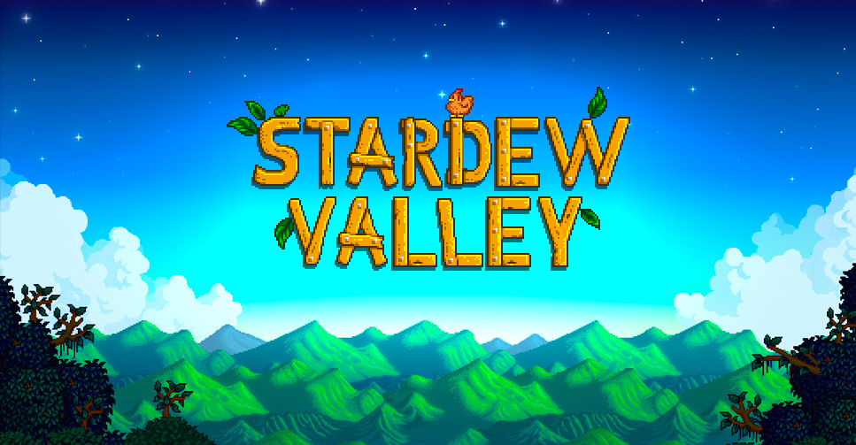

Stardew Valley é um RPG de simulação de fazenda que surpreendeu o mundo de jogos e ganhou milhões de fãs. Cuidar de uma fazenda, se aproximar dos moradores de uma cidade pequena e ajudar a renovar o Centro da Comunidade
X